~The Spin Tool~
4/14/2025
Spinning Specific types of your mesh
Working from the different Axis
The Angle Slider from the Spin Last Operation Dialog
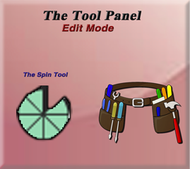Spinning a Cube
Go into Edit mode with the cube and select the Spin tool from the Tool panel on the left.
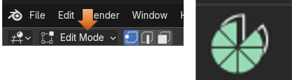
Move the cursor off to the side of the box, because it will be used for the boxes to spin around. You can use the cursor tool from the tool box, to move it.
Here is a cube, and we took it, and spun it around the cursor. To do this, you want to select the entire cube with the A key, hover over one of the plus signs (given to you from this tool) until you see a blue circle appear.
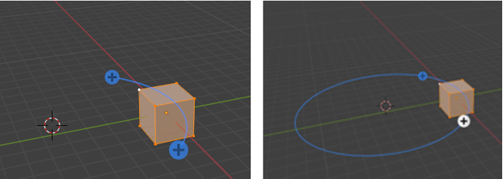The circle will tell you how the spin will go. Now when you press down the left mouse button you will see this next spin type of icon, show up on the screen.
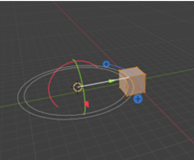When that spin icon appears you can simply drag the mouse around the circle of this new spin gizmo, and it will start to duplicate the object in a circle around the center cursor icon.
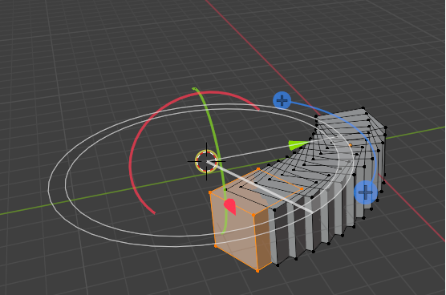This is what the boxes look like when you complete the spin.
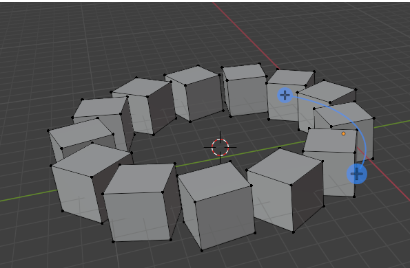The Last Operation Dialog Box
At the bottom of the screen, you will see the Spin dialog box, because Spin was the last operation.
Look at what happens if you reduce the steps from 12 to 5. Do you need a few boxes in a circle? Then this could be an option for you to create them quickly.
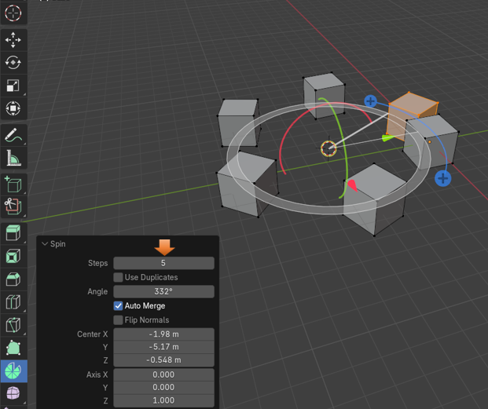
Remove that first box. It was only used to create the copies. Now you will notice that the 5 boxes you were left with (what you asked for in the Steps textbox) will have equal spacing between them.
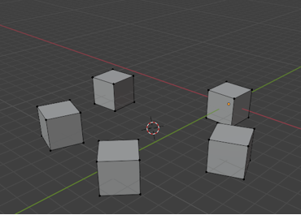Spinning Specific types of your mesh
Well, the above demonstrated what would happen if you selected the entire cube and rotated it. You can also just take a face, an edge or even a vertex and just spin those.
Spinning a Face
Go into Face Mode
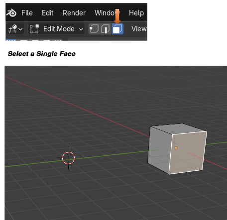Make sure your cursor is off to the side of the box and not directly on it, so we can spin around it.
Now grab the Spin tool, and spin this face. Notice that for this one, I upped the steps to be 43. Setting the steps to this amount makes it a nice-looking ring.
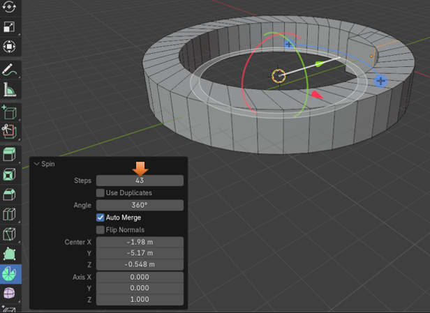
Again, you want to delete the original cube, as it kind of gets in the way of things looking right. You might have to use the Select More function to grab it out of the mesh, if you accidentally deselected this first box. Select a face of the original face and then hit the plus key or go to the select menu.
Then just delete it to remove it.
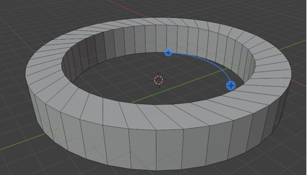Spinning an Edge
Now let’s try and Spin just an edge.
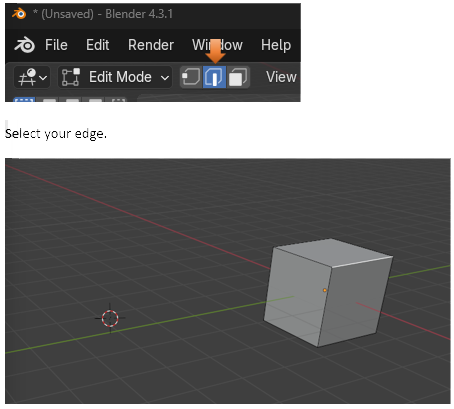Grab the spin tool and spin it.
I put the steps to 27. So, it looks sort of like a side walk.
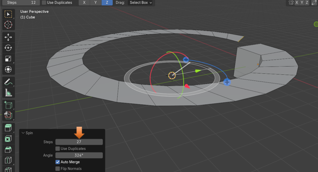
Remember that clicking on the viewport, will make the dialog box, for your last operation, disappear from the bottom of the screen, but you will still be able to do certain things from a sub menu that will come with this tool at the top of the viewport.
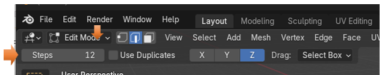Spinning a Vertex
Go into Vertex mode
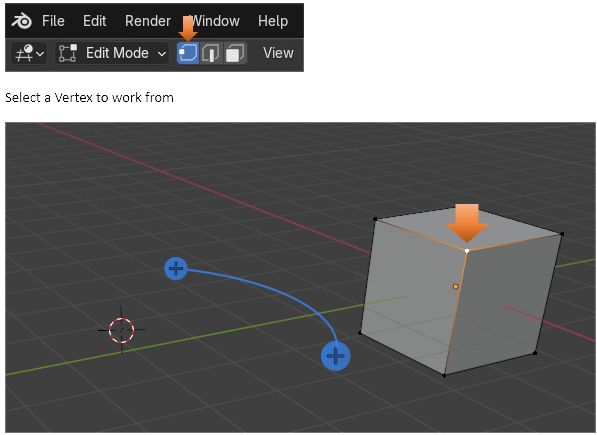You still want to make sure that the cursor is located at the center of where you want the spin to occur.
Grab your spin tool and start spinning. Cool way to create the outline of the circle.
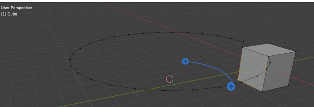Working from the different Axis
You will notice that at the top of the app, while in the Spin tool in edit mode you will see this X, Y, and Z. These are the different axis in space in which you can work in.
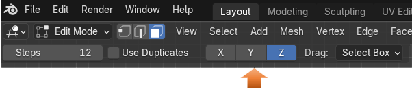Go back to Object mode, and get rid of that last object that we made on screen. We want to start in an Orthographic Mode. I chose Front Orthographic mode to add the object.
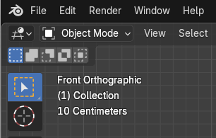Snap the cursor back to center in Object mode.
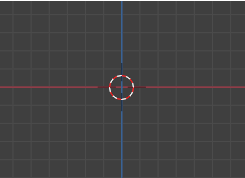Add a circle from the Add menu
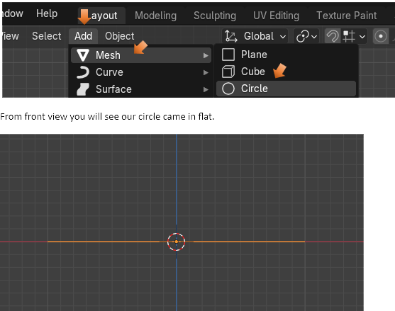Go to Edit mode
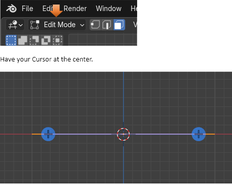Go into Top view (7 on Numpad)
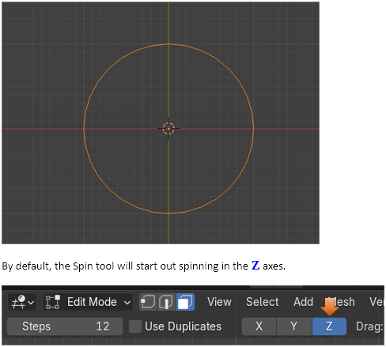Make sure you have the circle selected. Grab the spin tool and start spinning the circle. You will notice something strange. The spin tool is spinning the vertices, but it is not doing too much because everything is in the same Z plane Axes.
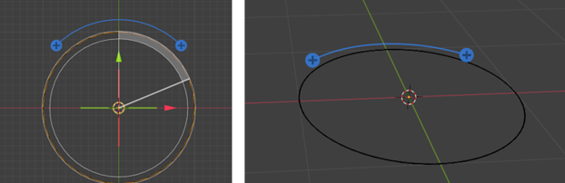This is where the different Axis come in. Let’s try spinning this instead in the Y Axis. Use the ctrl-Z to undo the spin you just did in the Z axis. Notice the color of the tool changes to Green, when we change it to the Y axis, and it is in a different orientation on the screen.
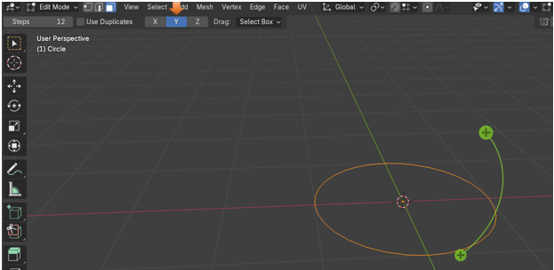Hover over the plus sign with your mouse until you see the circle and then the spin gizmo, then just start spinning with the spin tool. Ok, now we are starting to get somewhere with our spin.
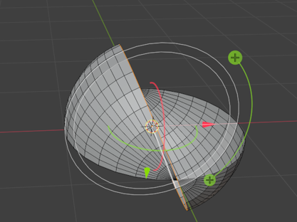
Ctrl-Z to undo that Y spin, and try the X axis to see what that does. We will see again that the orientation of the tool, and the color changes again. This time to red, for X.
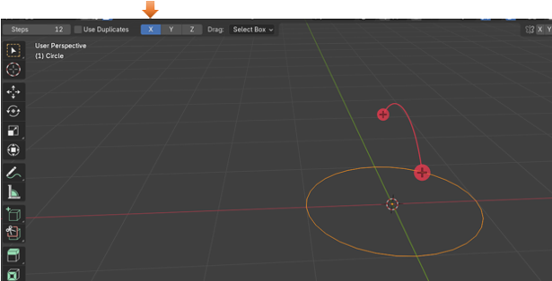
Now hover over the plus sign until it turns into first that circle, and then the spin gizmo, and start your spin again. This time, you see we are spinning our circle mesh into a sphere.
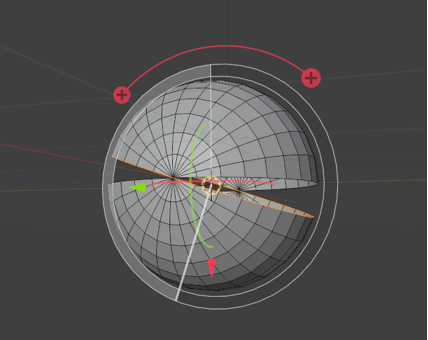The Angle Slider from the Spin Last Operation Dialog
If you start moving the angle slider in the Spin dialog box at the bottom, you can actually get this sphere to close.
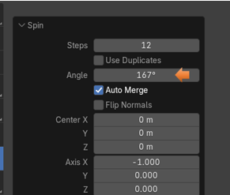Auto Merge
It should auto merge when it gets close enough, to bring the two halves of the sphere together..
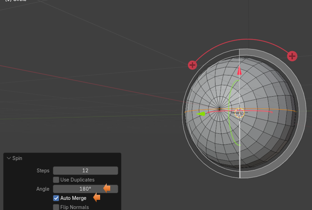If it doesn’t Auto merge, you can change some of the setting for that here. You want to up the Threshold to make the Auto Merge more sensitive to vertices that are close to it. It should snap everything together. Just don’t go too far as you will end up warping your object.
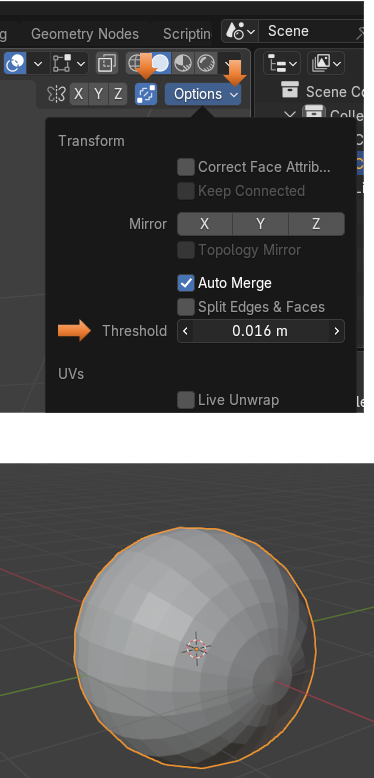Well, that is about it, for the Spin tool. You can play around with it and see what kind of things you can make out of it.